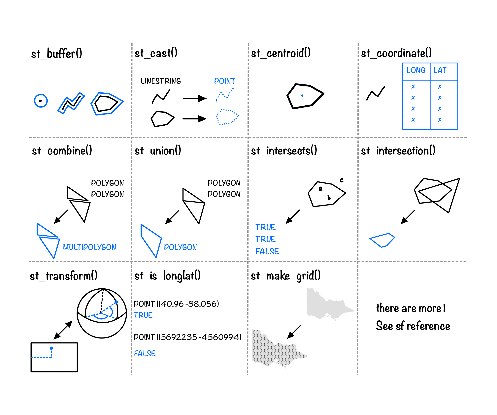

Switching between space and time: Spatio-temporal analysis with cubble
Sherry Zhang
2022-09-27
Hi!
A 3rd year PhD student in the Department of Econometrics and Business Statistics, Monash University
My research centers on exploring multivariate spatio-temporal with data wrangling and visualisation tool.
Roadmap

Spatio-temporal data
People talk about different things when they talk about spatio-temporal data!

The focus of today will be on vector data
Examples of vector data
Physical sensors that measure the temperature, rainfall, wind speed & direction, river level, etc

A recent blog post on Vector Data Cubes by Edzer Pebesma
Represent vector data in R?
- A pair of longitude/ latitude
# A tibble: 2 × 6
id long lat elev name wmo_id
<chr> <dbl> <dbl> <dbl> <chr> <dbl>
1 ASN00060139 153. -31.4 4.2 port macquarie airport aws 94786
2 ASN00068228 151. -34.4 10 bellambi aws 94749- Simple features
Simple feature collection with 2 features and 4 fields
Geometry type: POINT
Dimension: XY
Bounding box: xmin: 150.9291 ymin: -34.3691 xmax: 152.8655 ymax: -31.4336
Geodetic CRS: GDA94
# A tibble: 2 × 5
id elev name wmo_id geometry
<chr> <dbl> <chr> <dbl> <POINT [°]>
1 ASN00060139 4.2 port macquarie airport aws 94786 (152.8655 -31.4336)
2 ASN00068228 10 bellambi aws 94749 (150.9291 -34.3691)Geometrical operations with sf
https://r-spatial.github.io/sf/reference/index.html
Ploting an sf object


Look into an sf object - POINTS
Simple feature collection with 2 features and 6 fields
Geometry type: POINT
Dimension: XY
Bounding box: xmin: 150.9291 ymin: -34.3691 xmax: 152.8655 ymax: -31.4336
Geodetic CRS: GDA94
# A tibble: 2 × 7
id lat long elev name wmo_id geometry
<chr> <dbl> <dbl> <dbl> <chr> <dbl> <POINT [°]>
1 ASN00060139 -31.4 153. 4.2 port macquarie… 94786 (152.8655 -31.4336)
2 ASN00068228 -34.4 151. 10 bellambi aws 94749 (150.9291 -34.3691)Geometry set for 2 features
Geometry type: POINT
Dimension: XY
Bounding box: xmin: 150.9291 ymin: -34.3691 xmax: 152.8655 ymax: -31.4336
Geodetic CRS: GDA94
POINT (152.8655 -31.4336)
POINT (150.9291 -34.3691)POINT (152.8655 -31.4336)Look into an sf object - POINTS (2)
The point sfg is a paired vector with special class labels
POINT (152.8655 -31.4336)[1] "double"[1] 152.8655 -31.4336$class
[1] "XY" "POINT" "sfg" The POINT (152.8655 -31.4336) format is called well-known text, which is a human-readable encoding used by sf
Look into an sf object - POINTS (3)
The POINT sfc is a list of sfg with special attributes
Geometry set for 1 feature
Geometry type: POINT
Dimension: XY
Bounding box: xmin: 152.8655 ymin: -31.4336 xmax: 152.8655 ymax: -31.4336
Geodetic CRS: GDA94
POINT (152.8655 -31.4336)
POINT (150.9291 -34.3691)[1] "list"[1] "class" "precision" "bbox" "crs" "n_empty" [[1]]
POINT (152.8655 -31.4336)
[[2]]
POINT (150.9291 -34.3691)Other geoms - LINESTRING
The linestring sfg is a matrix of paired doubles
LINESTRING (149.2317 -35.222, 149.2716 -35.2708, 149.3153 -35.27623, 149.3972 -35.32425, 149.3363 -35.33988, 149.2493 -35.33013, 149.2045 -35.34761, 149.1464 -35.4153, 149.1352, ...)[1] "double" [,1] [,2]
[1,] 149.2317 -35.22200
[2,] 149.2716 -35.27080
[3,] 149.3153 -35.27623
[4,] 149.3972 -35.32425
[5,] 149.3363 -35.33988
[6,] 149.2493 -35.33013
[7,] 149.2045 -35.34761
[8,] 149.1464 -35.41530
[9,] 149.1352 -35.45369
[10,] 149.1516 -35.49320
[11,] 149.1325 -35.54950
[12,] 149.1405 -35.58829
[13,] 149.0781 -35.58642
[14,] 149.0950 -35.67682
[15,] 149.1094 -35.69659
[16,] 149.0907 -35.76562
[17,] 149.1011 -35.80506
[18,] 149.0488 -35.92041
[19,] 149.0122 -35.89970
[20,] 148.9584 -35.89179
[21,] 148.9127 -35.85546
[22,] 148.8894 -35.72272
[23,] 148.8347 -35.74051
[24,] 148.7884 -35.69781
[25,] 148.7985 -35.66698
[26,] 148.7689 -35.60426
[27,] 148.7628 -35.49550
[28,] 148.7858 -35.40891
[29,] 148.8087 -35.38246
[30,] 148.7935 -35.33912
[31,] 148.8101 -35.30745
[32,] 149.1209 -35.12442
[33,] 149.1891 -35.16552
[34,] 149.1903 -35.19435
[35,] 149.2317 -35.22200Other geoms - POLYGONS
POLYGON sfg is a list where each element is a matrix of paired vectors
POLYGON ((149.2317 -35.222, 149.2716 -35.2708, 149.3153 -35.27623, 149.3972 -35.32425, 149.3363 -35.33988, 149.2493 -35.33013, ...))[1] "list"[[1]]
[,1] [,2]
[1,] 149.2317 -35.22200
[2,] 149.2716 -35.27080
[3,] 149.3153 -35.27623
[4,] 149.3972 -35.32425
[5,] 149.3363 -35.33988
[6,] 149.2493 -35.33013
[7,] 149.2045 -35.34761
[8,] 149.1464 -35.41530
[9,] 149.1352 -35.45369
[10,] 149.1516 -35.49320
[11,] 149.1325 -35.54950
[12,] 149.1405 -35.58829
[13,] 149.0781 -35.58642
[14,] 149.0950 -35.67682
[15,] 149.1094 -35.69659
[16,] 149.0907 -35.76562
[17,] 149.1011 -35.80506
[18,] 149.0488 -35.92041
[19,] 149.0122 -35.89970
[20,] 148.9584 -35.89179
[21,] 148.9127 -35.85546
[22,] 148.8894 -35.72272
[23,] 148.8347 -35.74051
[24,] 148.7884 -35.69781
[25,] 148.7985 -35.66698
[26,] 148.7689 -35.60426
[27,] 148.7628 -35.49550
[28,] 148.7858 -35.40891
[29,] 148.8087 -35.38246
[30,] 148.7935 -35.33912
[31,] 148.8101 -35.30745
[32,] 149.1209 -35.12442
[33,] 149.1891 -35.16552
[34,] 149.1903 -35.19435
[35,] 149.2317 -35.22200Other geoms - MULTIPOLYGONS
MULTIPOLYGON sfg is a nested list where each list element can contain multiple matrices of paired vectors
MULTIPOLYGON (((146.5662 -38.74262, 146.6066 -38.75672, 146.5454 -38.79089, 146.494 -38.77426, 146.4648 -38.73993, 146.5061 -38.72507, 146.5662 -38.74262)), ((145.2475 -38.50478, 145.2217 -38.52812, 145.1439 -38.50573, 145.1668 -38.46616, 145.2145 -38.44883, 145.277 -38.45114, 145.308 -38.51863, 145.2475 -38.50478)), ...)[1] "list"[1] 2[[1]]
[[1]][[1]]
[,1] [,2]
[1,] 145.2859 -38.39620
[2,] 145.2903 -38.28367
[3,] 145.4109 -38.37078
[4,] 145.2859 -38.39620
[[2]]
[[2]][[1]]
[,1] [,2]
[1,] 140.9657 -38.05599
[2,] 140.9739 -37.46209
[3,] 140.9693 -36.79305
[4,] 140.9631 -35.74853
[5,] 140.9656 -35.00826
[6,] 140.9617 -34.09582
[7,] 141.0089 -34.04466
[8,] 141.2610 -34.07898
[9,] 141.3576 -34.11069
[10,] 141.5176 -34.20645
[11,] 141.7049 -34.09569
[12,] 141.8424 -34.13253
[13,] 141.8991 -34.11149
[14,] 142.0745 -34.13049
[15,] 142.0821 -34.17299
[16,] 142.2203 -34.18167
[17,] 142.2385 -34.30782
[18,] 142.3337 -34.33930
[19,] 142.3684 -34.52709
[20,] 142.4347 -34.57615
[21,] 142.5262 -34.75981
[22,] 142.6968 -34.72016
[23,] 142.6995 -34.60315
[24,] 142.7635 -34.59674
[25,] 143.0400 -34.70251
[26,] 143.1041 -34.69400
[27,] 143.3515 -34.79600
[28,] 143.3196 -34.96870
[29,] 143.3470 -35.10478
[30,] 143.3964 -35.19311
[31,] 143.5639 -35.20263
[32,] 143.5637 -35.31612
[33,] 143.6423 -35.40104
[34,] 143.7465 -35.38860
[35,] 143.8666 -35.48032
[36,] 144.0479 -35.55617
[37,] 144.1175 -35.62593
[38,] 144.3757 -35.80121
[39,] 144.4082 -35.90422
[40,] 144.5833 -36.03903
[41,] 144.8058 -36.12384
[42,] 144.9236 -35.98895
[43,] 144.9750 -35.88343
[44,] 145.0729 -35.82776
[45,] 145.2465 -35.83041
[46,] 145.3524 -35.86580
[47,] 145.5340 -35.80529
[48,] 145.6847 -35.93075
[49,] 145.7934 -35.98282
[50,] 145.9080 -35.95356
[51,] 145.9891 -36.01308
[52,] 146.2618 -36.01580
[53,] 146.3877 -36.03527
[54,] 146.4143 -35.97545
[55,] 146.5179 -35.96006
[56,] 146.6870 -36.04082
[57,] 146.8363 -36.08219
[58,] 147.0162 -36.08950
[59,] 147.1372 -36.02862
[60,] 147.2043 -36.04989
[61,] 147.3522 -36.03229
[62,] 147.4043 -35.94356
[63,] 147.4986 -35.94664
[64,] 147.5552 -36.00321
[65,] 147.7084 -35.92854
[66,] 147.9140 -35.99795
[67,] 147.9976 -36.04777
[68,] 148.0289 -36.14008
[69,] 148.0383 -36.36556
[70,] 148.1247 -36.46484
[71,] 148.1244 -36.55098
[72,] 148.2174 -36.59885
[73,] 148.1851 -36.69222
[74,] 148.1949 -36.79625
[75,] 149.1998 -37.20119
[76,] 149.9763 -37.50503
[77,] 149.7393 -37.58451
[78,] 149.6747 -37.68584
[79,] 149.4948 -37.76847
[80,] 149.2516 -37.78179
[81,] 148.8087 -37.78642
[82,] 148.6260 -37.80814
[83,] 148.3662 -37.80395
[84,] 148.1792 -37.83164
[85,] 147.7884 -37.95525
[86,] 147.4672 -38.15915
[87,] 147.0672 -38.47512
[88,] 146.9320 -38.59602
[89,] 146.7857 -38.64632
[90,] 146.4438 -38.69492
[91,] 146.2675 -38.68791
[92,] 146.1856 -38.74344
[93,] 146.2656 -38.80531
[94,] 146.2919 -38.90428
[95,] 146.4170 -38.84892
[96,] 146.4873 -38.90615
[97,] 146.4367 -38.97907
[98,] 146.4209 -39.12585
[99,] 146.2739 -38.99612
[100,] 146.1842 -38.86951
[101,] 146.0632 -38.81177
[102,] 145.9189 -38.90688
[103,] 145.8715 -38.77944
[104,] 145.7308 -38.64813
[105,] 145.5647 -38.65419
[106,] 145.4237 -38.53648
[107,] 145.4329 -38.42871
[108,] 145.5525 -38.35457
[109,] 145.4883 -38.23615
[110,] 145.3442 -38.21445
[111,] 145.2550 -38.23743
[112,] 145.1299 -38.39045
[113,] 145.0257 -38.47967
[114,] 144.9244 -38.49740
[115,] 144.8369 -38.37040
[116,] 144.9750 -38.32697
[117,] 145.1213 -38.13339
[118,] 145.0906 -38.01495
[119,] 145.0307 -37.99351
[120,] 144.9638 -37.85576
[121,] 144.8085 -37.88033
[122,] 144.6502 -38.00202
[123,] 144.4874 -38.07828
[124,] 144.3979 -38.07382
[125,] 144.3561 -38.13840
[126,] 144.4807 -38.16449
[127,] 144.6318 -38.10734
[128,] 144.7197 -38.14612
[129,] 144.6142 -38.29214
[130,] 144.4357 -38.28130
[131,] 144.2516 -38.38841
[132,] 144.0365 -38.47578
[133,] 143.9731 -38.56636
[134,] 143.8421 -38.67908
[135,] 143.6854 -38.73536
[136,] 143.5557 -38.85494
[137,] 143.3569 -38.75435
[138,] 143.2203 -38.76029
[139,] 143.0217 -38.62625
[140,] 142.8611 -38.60563
[141,] 142.5633 -38.42200
[142,] 142.3722 -38.34942
[143,] 142.1482 -38.38969
[144,] 141.8849 -38.26629
[145,] 141.7420 -38.25311
[146,] 141.5992 -38.32107
[147,] 141.5575 -38.42235
[148,] 141.4067 -38.36934
[149,] 141.3574 -38.27460
[150,] 141.2278 -38.17065
[151,] 140.9657 -38.05599Geometry types - summary
The
sf,sfc, andsfgobjects have informative header prints but they can be boiled down to basic data structures that we’re already familiar withThere are more than just introduced geometry types: MULTIPOINTS, MULTILINESTRING, etc
In practice, you don’t have to decompose/ manipulate these vectors or matrices manually, existing geometrical operations (
st_*()) and visualisation tools (geom_sf()) will do that for you.
Geometrical operations with sf again
https://r-spatial.github.io/sf/reference/index.html
Aggregate time series with tsibble
Time series of weather station data

How’s the data quality from BOM?
ts_tsibble <- ts %>% tsibble::as_tsibble(key = id, index = date)
(missings <- ts_tsibble %>% tsibble::count_gaps())# A tibble: 112 × 4
id .from .to .n
<chr> <date> <date> <int>
1 ASN00003057 2020-02-17 2020-02-18 2
2 ASN00003057 2020-02-25 2020-03-01 6
3 ASN00003057 2020-03-07 2020-03-09 3
4 ASN00003057 2020-03-11 2020-03-13 3
5 ASN00003057 2020-03-25 2020-03-27 3
# … with 107 more rowsHow’s the data quality from BOM (2)?

Inexplicit NAs to explicit NAs

Summarising daily data

Space and time at the same time
Goal of today: glyph map

Cubble - a spatio-temporal vector data structure

https://huizezhang-sherry.github.io/cubble/articles/cubble-design.html
Cast your data into a cubble
(cb <- as_cubble(
list(spatial = stations_sf, temporal = ts),
key = id, index = date, coords = c(long, lat)
))# cubble: id [30]: nested form [sf]
# bbox: [114.09, -41.88, 152.87, -11.65]
# temporal: date [date], prcp [dbl], tmax [dbl], tmin [dbl]
id lat long elev name wmo_id geometry ts
<chr> <dbl> <dbl> <dbl> <chr> <dbl> <POINT [°]> <list>
1 ASN00003057 -16.5 123. 7 cygn… 94201 (123.0086 -16.4514) <tibble>
2 ASN00005007 -22.2 114. 5 lear… 94302 (114.0967 -22.2406) <tibble>
3 ASN00005084 -21.5 115. 5 thev… 94303 (115.0197 -21.4606) <tibble>
4 ASN00010515 -32.1 117. 199 beve… 95615 (116.9247 -32.1083) <tibble>
5 ASN00012314 -27.8 121. 497 lein… 95448 (120.7031 -27.8386) <tibble>
6 ASN00014401 -11.7 133. 19.2 warr… 94139 (133.3796 -11.6502) <tibble>
7 ASN00014703 -15.7 137. 12.2 cent… 94248 (136.8192 -15.7426) <tibble>
8 ASN00017123 -28.1 140. 37.8 moom… 95481 (140.1956 -28.0997) <tibble>
9 ASN00018201 -32.5 138. 14 port… 95666 (137.7144 -32.5091) <tibble>
10 ASN00022841 -35.7 138. 5 king… 95807 (137.5231 -35.7114) <tibble>
# … with 20 more rowsSubset on space
# cubble: id [20]: nested form
# bbox: [114.09, -41.65, 152.72, -11.65]
# temporal: date [date], prcp [dbl], tmax [dbl], tmin [dbl]
id lat long elev name wmo_id geometry ts
<chr> <dbl> <dbl> <dbl> <chr> <dbl> <POINT [°]> <list>
1 ASN00005007 -22.2 114. 5 lear… 94302 (114.0967 -22.2406) <tibble>
2 ASN00005084 -21.5 115. 5 thev… 94303 (115.0197 -21.4606) <tibble>
3 ASN00012314 -27.8 121. 497 lein… 95448 (120.7031 -27.8386) <tibble>
4 ASN00014401 -11.7 133. 19.2 warr… 94139 (133.3796 -11.6502) <tibble>
5 ASN00018201 -32.5 138. 14 port… 95666 (137.7144 -32.5091) <tibble>
6 ASN00026095 -37.0 140. 17 cape… 94813 (139.7164 -36.9655) <tibble>
7 ASN00036026 -24.3 144. 203 isis… 94345 (144.4406 -24.2591) <tibble>
8 ASN00039059 -24.1 153. 3.9 lady… 94388 (152.7161 -24.1116) <tibble>
9 ASN00043015 -25.8 149. 393 inju… 94511 (148.5669 -25.8428) <tibble>
10 ASN00044026 -28.1 146. 189. cunn… 94500 (145.6808 -28.0706) <tibble>
# … with 10 more rowsSummarise in time
(cb_tm <- cb_space %>%
face_temporal() %>%
group_by(month = lubridate::month(date)) %>%
summarise(tmax = mean(tmax, na.rm = TRUE))
)# cubble: month, id [20]: long form
# bbox: [114.09, -41.65, 152.72, -11.65]
# spatial: lat [dbl], long [dbl], elev [dbl], name [chr], wmo_id [dbl],
# geometry [POINT [°]]
id month tmax
<chr> <dbl> <dbl>
1 ASN00005007 1 38.8
2 ASN00005007 2 37.5
3 ASN00005007 3 38.1
4 ASN00005007 4 35.8
5 ASN00005007 5 28.6
6 ASN00005007 6 26.6
7 ASN00005007 7 27.4
8 ASN00005007 8 28.4
9 ASN00005007 9 32.0
10 ASN00005007 10 31.6
# … with 230 more rowsMove coordinates into time
# cubble: month, id [20]: long form
# bbox: [114.09, -41.65, 152.72, -11.65]
# spatial: lat [dbl], long [dbl], elev [dbl], name [chr], wmo_id [dbl],
# geometry [POINT [°]]
id month tmax long lat
<chr> <dbl> <dbl> <dbl> <dbl>
1 ASN00005007 1 38.8 114. -22.2
2 ASN00005007 2 37.5 114. -22.2
3 ASN00005007 3 38.1 114. -22.2
4 ASN00005007 4 35.8 114. -22.2
5 ASN00005007 5 28.6 114. -22.2
6 ASN00005007 6 26.6 114. -22.2
7 ASN00005007 7 27.4 114. -22.2
8 ASN00005007 8 28.4 114. -22.2
9 ASN00005007 9 32.0 114. -22.2
10 ASN00005007 10 31.6 114. -22.2
# … with 230 more rowsGlyph map transformation

Making your first glyph map
Code
cb <- as_cubble(
list(spatial = stations_sf, temporal = ts),
key = id, index = date, coords = c(long, lat)
)
set.seed(0927)
cb_glyph <- cb %>%
slice_sample(n = 20) %>%
face_temporal() %>%
group_by(month = lubridate::month(date)) %>%
summarise(tmax = mean(tmax, na.rm = TRUE)) %>%
unfold(long, lat)
ggplot() +
geom_sf(data = oz_simp, fill = "grey95", color = "white") +
geom_glyph(
data = cb_glyph,
aes(x_major = long, x_minor = month, y_major = lat, y_minor = tmax),
width = 2, height = 0.7) +
ggthemes::theme_map()
https://huizezhang-sherry.github.io/cubble/articles/glyph.html
Your Time
Create a cubble object from the spatial and temporal data given
Perform an operation on the space in the nested form
Switch to the long form to summarise the temporal data
Make a glyph map!
Further reading
- Spatial Data Science with application to R: https://r-spatial.org/book/
- sf: https://r-spatial.github.io/sf/index.html
- tsibble: https://tsibble.tidyverts.org/
- cubble: https://huizezhang-sherry.github.io/cubble/
Acknowledgements
- The slides are made with Quarto and are available at sherryzhang-RLadiesMelb2022.netlify.app